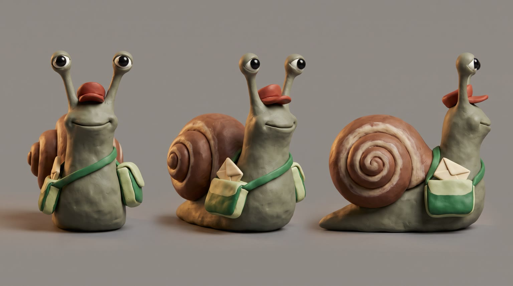
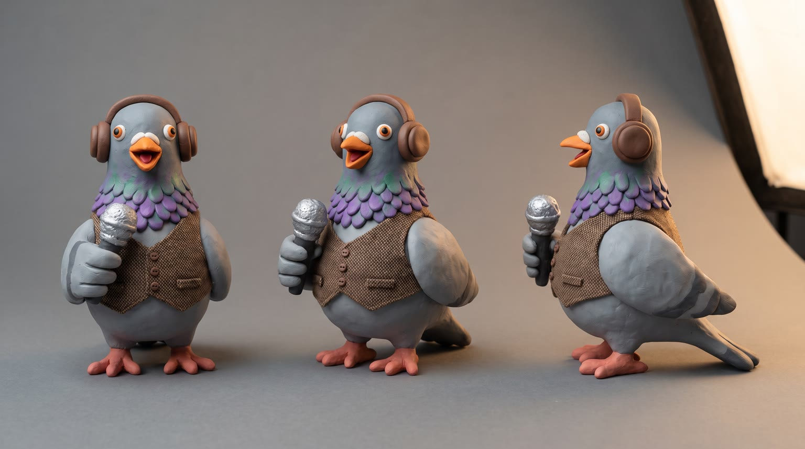
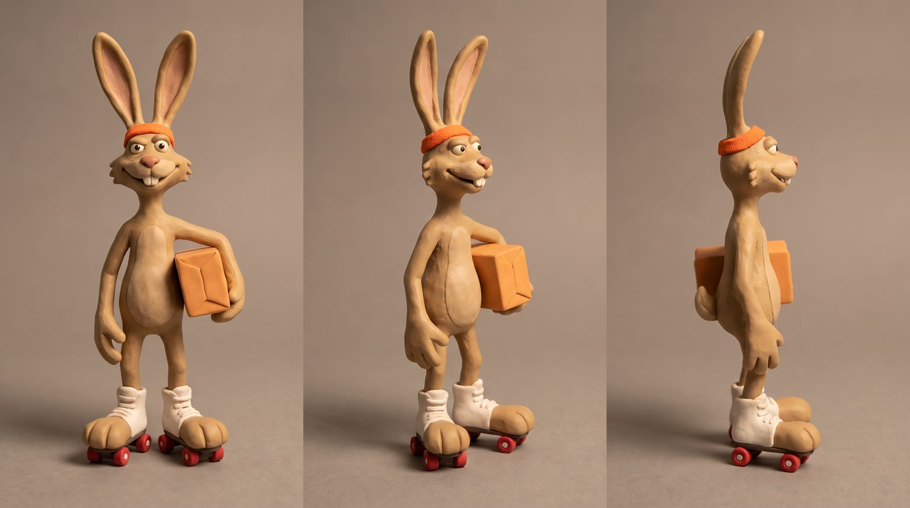
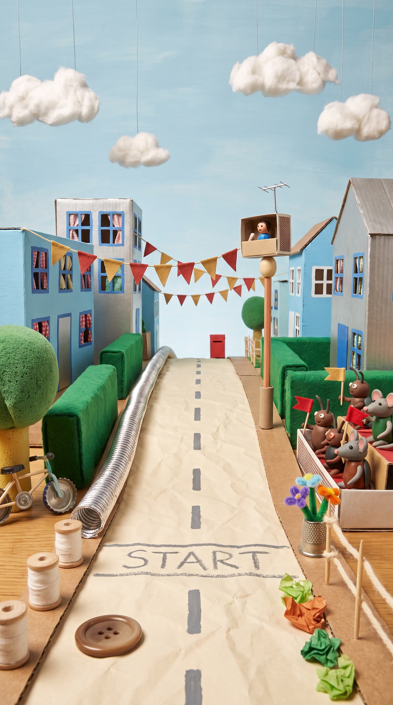
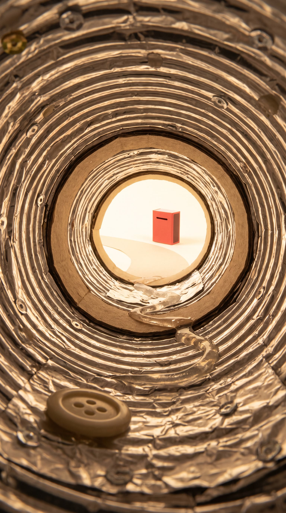
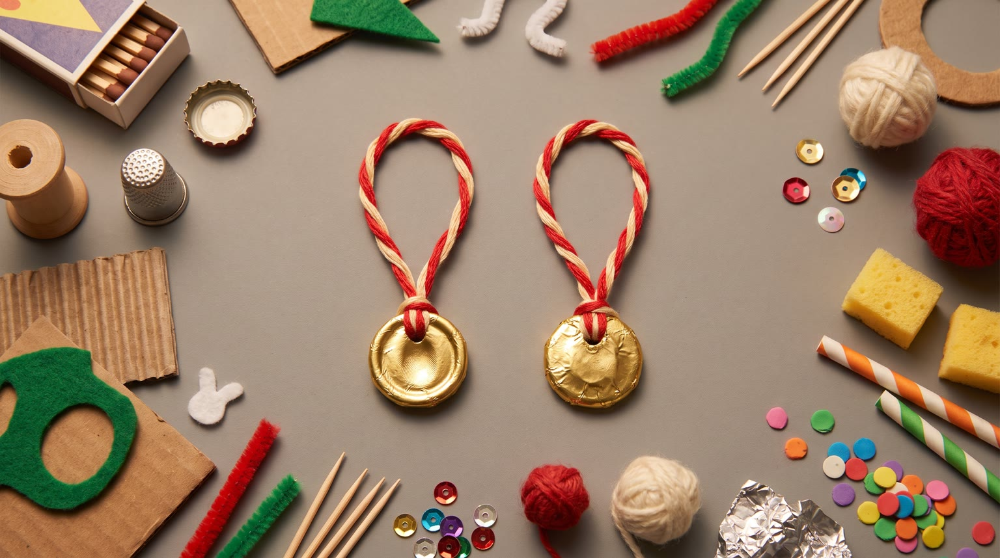
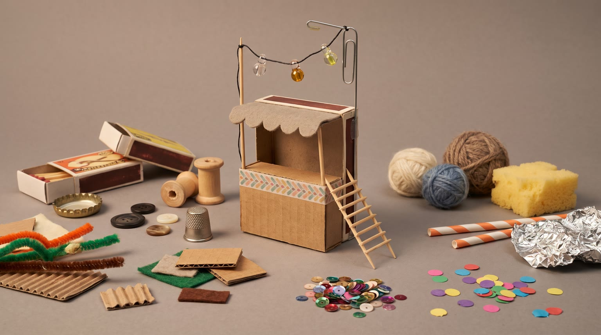
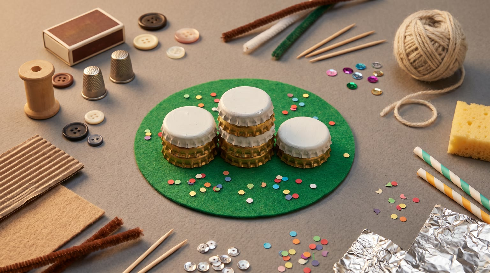

All templates · template.json · original storyboard
Claymationclaymation-01-snail-mailSnail Mail
The Puddleton Parcel Dash: the fastest couriers in town against one old snail with a letter to deliver. He cannot outrun them, so he out-thinks them, with {{product.name}}.
Fit by product type
| ingested | great | the towering real product with a clay straw down to the snail is the concept's best gag |
| applied | good | a dab on a bottle-cap dish polishes his shell to a gleam; reads well for balms, polishes and skincare |
| worn | stretch | a clay snail cannot wear a human-size item; the product becomes a roadside landmark he nestles into |
| handheld | good | he nudges the gadget on with his head and its light or click wakes him up |
| carried | good | the open pocket is a burrow at snail height, though the bag plays no part in the dash |
| home | stretch | tabletop-size pieces (lamps, candles, cushions, mugs) stand at the set edge; large furniture only rises behind the table as a blurred mountain |
| consumable | good | one piece on a bottle-cap dish at the refreshment stand |
Refuses: products for children (the clay look must not pull a child audience toward an adult product); alcohol; products that only make sense shown on a human body (apparel fit, makeup looks): the cast are clay animals; weapons, including toy or starter pistols
Cast, world and props (shipped with the template)








- Puddleton is a clay town that sits on the far end of a craft table. Everything in it was made from something else: matchboxes, bottle caps, buttons, spools, felt and foil.
- The Parcel Dash runs once a year from the top of Crumb Hill to the old post-office mailbox at the bottom. The prize is a gold foil medal on embroidery thread.
- Gus has delivered Puddleton's post for 40 years and has never won the Dash. His cap has a repair stitch where it tore in last year's race.
- Blaze has won three years running on bead-wheel skates and wears the three bottle-cap medals round his neck.
- Pip calls every race from a matchbox booth bolted to a paper-clip lamp post.
Script: what each line must do
Right column is the worked example for Red Bull Sugarfree.
| Time | Speaker | Intent (template) | Example |
|---|---|---|---|
| 0.3-2.5 | pip | Fixed: And in lane four... a snail? Seriously? Max 9 words. Delivery: fast sportscaster patter that screeches to a stop, double take | And in lane four... a snail? Seriously? |
| 6.4-8.2 | gus | The hero's philosophy in 4 to 6 words: speed loses to the quality the product gives him, the same benefit L3 names (sharp, comfortable, steady, prepared), said as wisdom, not a boast. No brand name. must echo the L3 benefit and claim nothing beyond it Max 6 words. Delivery: slow drawl, dust settling around him, not bothered at all | Fast is fine. Sharp is faster. |
| 11.4-13.6 | gus | Product line: say {{product.name}} (or its short spoken form) and the ONE benefit from product.benefits that lets a slow courier out-think fast ones (focus, comfort, grip, protection, calm). benefit comes only from product.benefits, reworded no further than person and tense; brand spelled phonetically in the video prompt using product.phonetic Max 8 words. Delivery: after the product moment, eyestalks snapping upright, a satisfied drawl | Red Bull Sugarfree. Keeps me sharp. |
| 17.6-19.2 | pip (off camera) | Fixed: He's taking the drainpipe! Max 6 words. Delivery: shrieking with delight | He's taking the drainpipe! |
| 22.6-23.8 | pip (off camera) | Fixed: The snail wins it! Max 6 words. Delivery: full sportscaster roar | The snail wins it! |
| 24.4-25.4 | gus | Fixed: Special delivery. Max 4 words. Delivery: dry, a tip of the cap | Special delivery. |
| 27.6-29.4 | gus (off camera) | Tagline: product.tagline if the page has one, otherwise a 3 to 5 word drawled line about winning by being clever, not fast. Max 6 words. Delivery: slow warm drawl voiceover | Wiiings without sugar. |
Product-adjacent props by type
| ingested | a tiny cardboard refreshment stand with a felt awning; a long red and white striped clay straw bent down from the product's top to snail height |
| applied | a tiny cardboard pit-stop stand with a felt awning; a bottle-cap dish holding a small dab of the product's contents |
| worn | a tiny cardboard pit-stop stand with a felt awning beside the product |
| handheld | a tiny cardboard pit-stop stand with a felt awning beside the product |
| carried | a tiny cardboard pit-stop stand with a felt awning beside the open product |
| home | the edge of the tabletop set beside the road (large pieces rise behind the table like a mountain) |
| consumable | a tiny cardboard refreshment stand with a felt awning; a bottle-cap dish holding one piece of the product |
Shots and how the product appears for each type
S01 · 0 to 2.7 s · absent
Pip the pigeon in her matchbox commentary booth, microphone up, patter cut short as she leans out and stares down at the start line in disbelief.
S02 · 2.7 to 4.4 s · absent
The start line: Blaze the jackrabbit crouched on roller skates, a clay beetle on a bottle-cap bicycle, and tiny Gus in lane four with his cap and satchel.
S03 · 4.4 to 6.2 s · absent
The clay starter's flag drops; every racer shoots off as a clay smear of colour and a puff of cotton dust; Gus is left at the line.
S04 · 6.2 to 8.4 s · absent
Gus in close-up as the cotton dust settles, completely unbothered, one eyestalk raised.
S05 · 8.4 to 10.8 s · reveal
At a tiny cardboard pit stop by the road, the real product towers over Gus like a water tower, label to camera; he looks up at it in awe.
| ingested | {{product.visual}}, the real full-size product, not made of clay, opened and standing upright beside a tiny cardboard refreshment stand, a long red and white striped clay straw hanging from its top down to Gus (food: a crumb of it broken off onto a bottle-cap dish at its base), who looks up at it in awe; the straw does not cover the front label |
| applied | {{product.visual}}, the real full-size product, not made of clay, standing upright beside a tiny cardboard pit-stop stand with its cap off, a small glossy dab of its contents set out on a bottle-cap dish at its base, Gus looking up at it in awe |
| worn | {{product.visual}}, the real full-size product, not made of clay, set at the roadside beside a tiny cardboard pit-stop stand like a monument, its best side to camera, Gus looking up at it in awe |
| handheld | {{product.visual}}, the real full-size product, not made of clay, standing or lying beside a tiny cardboard pit-stop stand, towering over Gus, who looks up at it in awe |
| carried | {{product.visual}}, the real full-size product, not made of clay, standing open at the roadside beside a tiny cardboard pit-stop stand, its open pocket like a cave entrance at snail height, Gus looking up at it in awe |
| home | {{product.visual}}, the real full-size product, not made of clay, at the edge of the tabletop set beside the road (large pieces rise behind the table like a mountain), towering over a tiny cardboard pit-stop stand, Gus looking up at it in awe |
| consumable | a pack of {{product.visual}}, the real full-size product, not made of clay, opened and standing upright beside a tiny cardboard refreshment stand, one piece set out on a bottle-cap dish at its base for Gus, who looks up in awe |
S06 · 10.8 to 14.0 s · in_use
Gus uses the product his way (with his head, shell or eyestalks); his eyestalks snap straight and his eyes go sharp; he says the product line, the product beside him with the label to camera.
| ingested | Gus has just let go of the red and white striped clay straw from {{product.visual}} (food: just finished the crumb on the bottle-cap dish), his eyestalks now standing perfectly straight and alert, black bead eyes sharp and focused, a satisfied grin |
| applied | Gus has just slid his shell through the dab of {{product.visual}} on the bottle-cap dish, his shell now gleaming, eyestalks standing perfectly straight and alert, a satisfied grin, the product towering beside him label to camera |
| worn | Gus nestled snugly against {{product.visual}} (in the curve of a shoe, in the fold of a hood, under a cuff, through the loop of a strap), eyestalks now standing perfectly straight and alert, a satisfied grin, the product's logo to camera |
| handheld | Gus has just nudged {{product.visual}} on with his head (a button pressed, a light glowing, a lid popped, a case snapped shut), eyestalks now standing perfectly straight and alert, a satisfied grin, logo to camera |
| carried | Gus poking his head out of the open pocket of {{product.visual}}, eyestalks now standing perfectly straight and alert, a satisfied grin, logo to camera |
| home | Gus basking at the foot of {{product.visual}} in its glow, warmth or softness, eyestalks now standing perfectly straight and alert, a satisfied grin |
| consumable | Gus has just used the piece on the bottle-cap dish, taken from the pack of {{product.visual}}, eyestalks now standing perfectly straight and alert, a satisfied grin, the pack towering behind him label to camera |
S07 · 14.0 to 16.6 s · absent
From behind Gus's eyestalks: the long hill road where the racers are stuck in a tangle at a hairpin bend, and beside it the silver drainpipe running straight down to the mailbox. He narrows his eyes.
S08 · 16.6 to 20.6 s · absent
Gus tucked into his shell rolls and spirals down the crinkled foil drainpipe toward the bright exit, a clay smear trailing behind him.
S09 · 20.6 to 26.0 s · absent
Gus pops out of the pipe, slides the cream envelope into the plain red mailbox slot; Blaze skids in behind on his skates, panting, ears drooping; paper confetti falls.
S10 · 26.0 to 30 s · hero
The winners' podium made of stacked bottle caps: Gus on the top step with a gold clay medal, the real product beside the podium, label to camera, confetti still drifting. Tagline and pack shot.
| ingested | right beside the podium, {{product.visual}}, the real full-size product, not made of clay, standing upright and opened (the striped clay straw still in it for a beverage, propped on end if it is flat), towering over the podium |
| applied | right beside the podium, {{product.visual}}, the real full-size product, not made of clay, standing upright with its cap back on, towering over the podium |
| worn | right beside the podium, {{product.visual}}, the real full-size product, not made of clay, set neatly with its best side and logo to camera, towering over the podium |
| handheld | right beside the podium, {{product.visual}}, the real full-size product, not made of clay, standing upright, logo to camera, towering over the podium |
| carried | right beside the podium, {{product.visual}}, the real full-size product, not made of clay, standing upright, logo to camera, towering over the podium |
| home | right behind the podium at the edge of the set, {{product.visual}}, the real full-size product, not made of clay, best side to camera, towering over the podium (large pieces rise behind the table like a mountain) |
| consumable | right beside the podium, the pack of {{product.visual}}, the real full-size product, not made of clay, standing upright, label to camera, towering over the podium |
Generation units (templated prompts)
U1 · 9 s
9:16 claymation stop-motion on a handmade miniature clay town, animated on twos at 12 fps with slight frame-to-frame clay boil, no motion blur, visible thumbprints, warm tabletop light. Shot 1 (0 to 2.7 s): @Image1 (Pip, a clay pigeon announcer with headphones) in a matchbox booth, fast patter that stops dead as she leans out and stares down, stepped crash zoom: "And in lane four... a snail? Seriously?" Shot 2 (2.7 to 4.4 s): low wide on the chalk start line, @Image3 (Blaze, a clay jackrabbit on roller skates) crouched next to @Image2 (Gus, a tiny clay snail with a red cap and satchel). Shot 3 (4.4 to 6.2 s): a flag drops from a clay starter's flag, all racers shoot away as streaky clay smears and cotton dust puffs, Gus stays at the line. Shot 4 (6.2 to 9 s): macro close-up of Gus as the dust settles, one eyestalk raised, slow drawl: "{{line.L2}}" Native sound: cork pop, clay squeaks, skates, crowd. No music. No text on screen, banners blank.U2 · 6 s · exact-risk
9:16 claymation stop-motion, animated on twos at 12 fps, matte plasticine with thumbprints, warm tabletop light. Shot 1 (0 to 2.4 s): slow tilt up {{action.S05}}; the product is exactly @Image1, a real object standing on the clay street, not clay, towering over @Image2 (Gus, the tiny clay snail, no arms) like a water tower, label to camera, undistorted. Shot 2 (2.4 to 6 s): {{action.S06}}, and he says in a satisfied drawl: "{{line.L3}}" (say the brand as {{product.phonetic}}). Keep the product's shape, colours and label exactly as @Image1; the product does not move or change. Native sound: the product's own sound at tiny scale, a springy eyestalk boing. No music.U3 · 12 s
9:16 claymation stop-motion on a handmade clay town, animated on twos at 12 fps, clay smears for speed, no real motion blur. Shot 1 (0 to 2.6 s): over the shoulder of @Image1 (Gus, the clay snail), rack focus down the hill: the other racers tangled in a pile-up at a hairpin bend, the silver drainpipe beside him running straight down; he narrows his eyes, hmm. Shot 2 (2.6 to 6.6 s): inside the foil drainpipe, Gus tucked into his shell rolls and spirals toward the bright exit, trailing a brown clay smear, a joyful echoing whoop; a woman announcer's voice off screen shrieks: "He's taking the drainpipe!" Shot 3 (6.6 to 12 s): low wide at the bottom of the hill, Gus pops out, stretches up and slides a cream envelope into a plain red mailbox; @Image2 (Blaze, the clay jackrabbit on skates) skids in behind, panting, ears drooping; confetti falls; the announcer roars: "The snail wins it!" Gus tips his cap, dry: "Special delivery." Wheels on the ground, normal gravity. Native sound: rattling tumble, envelope thunk, skate skid, crowd. No music. No text, mailbox blank.
U4 · 5 s · exact-risk
9:16 claymation stop-motion pack shot, animated on twos at 12 fps. Slow motion-control push-in on a bottle-cap winners' podium on the clay street: @Image2 (Gus, the clay snail) on the top step in a gold clay medal, bobbing proudly, and {{action.S10}}; the product is exactly @Image1, a real object, not clay, label to camera, with a soft contact shadow. Paper confetti drifts. The product does not move or change shape. Clean pale blue painted sky above the product. Native sound: cheering crowd fading. No music, no text.